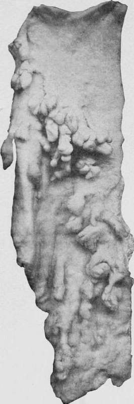

Mucous Polypi (Polyadenomata)
Description
This section is from the book "Cancer And Other Tumours Of The Stomach", by Samuel Fenwick. Also available from Amazon: Cancer and other tumours of the stomach.
Mucous Polypi (Polyadenomata)
These tumours appear to be more common on the continent of. Europe than in England or America, since Ebstein met with fourteen cases in 600 necropsies (2.3 per cent.), while in London, according to our statistics, their frequency of occurrence does not exceed 0.2 per cent. Out of thirty-four cases which we have collected from various sources the tumour was solitary in fourteen, or 41 per cent., while in the remaining twenty, or 59 per cent., the number varied from six to 200 (Cruveilhier, Eoullier, Brissaud, Leudet). A single polypus is usually situated near the pylorus, but in the multiple form of the disease the fundus and central portions of the viscus in the vicinity of the great curvature are principally affected. As a rule the tumours are distributed evenly over the two surfaces, but occasionally they are collected into groups of five or more (Cruveilhier), or are arranged in rows which run parallel with the long axis of the organ (Richard). The intervening mucous membrane may be quite healthy, or it may present numerous hemispherical swellings about the size of a split pea, which represent the disease in its rudimentary form. It is not uncommon to find a single polypus surrounded by several others in the process of formation.
As a rule the mucous polyp is globular or slightly lobulated, and looks like a small nut attached to the surface of the stomach by a short flat stalk ; but it may be cylindrical or club-shaped, or it may present the appearance of a mushroom. The solitary tumour may measure from one to four inches in length (Ebstein) ; but when several exist the individual polypi are remarkably uniform in size and seldom exceed three-quarters of an inch. The colour varies, according to the degree of vascularity, from a bright pink to a pale brown, and the surface, when freed from adherent mucus, is often found to be irregular and pigmented. The consistence is soft and slimy, and when firmly squeezed a large quantity of greyish mucus exudes from the tissue and the tumour is reduced to about one third of its original size. Occasionally the duodenum and ileum, or even the whole of the intestinal tract, are affected in a similar manner. On microscopical examination the centre of the tumour is found to consist of a strip of connective tissue, which is continuous with the submucous coat of the stomach and contains blood - vessels and lymphatics. Over this • is spread a layer of unstriped muscle, which represents the muscularis mucosae in an hypertrophied state. The great bulk of the growth is composed of mucous membrane, which is from five to twelve times its normal thickness. The free surface often presents a papillary appearance, owing to hypertrophy of the connective tissue between the mouths of the ducts, and is sometimes covered with cylindrical epithelium. The gastric glands are elongated, dilated, and tortuous, and here and there are converted into large cysts filled with mucus. These dilated glands closely resemble the uriniferous tubules in the cortical portion of the kidney, being provided with a distinct basement membrane and lined by cubical or cylindrical epithelium, while in the cysts the cells are often rounded and vacuolated. Menetrier distinguishes two varieties, according as the ducts or the fundi of the glands are chiefly affected. In the former case the tumour is distinctly lobulated and the cysts are numerous and large, owing to obstruction of the mouths of the ducts by fusion of the papillary processes between them. In the latter there is little or no lobulation, and cysts are either few in number or entirely absent. The intervening mucous membrane presents the usual signs of chronic inflammation, and its vessels are occasionally lardaceous.
Fig. 61.-Mucous polypi in the stomach (Museum of the Royal College of Surgeons.).
Very little is known with regard to the etiology of the disease. Out of thirty-two cases in which the sex of the patient was stated, twenty-two were males and ten were females. The complaint is rare before the age of forty, but the tendency to it seems to increase with advancing age. This fact is shown in the following table.
Age | No. of cases | Percentage |
Under twenty-five | 1 | 3.4 |
Thirty to forty .... | 3 | 10.3 |
Forty to fifty .... | 7 | 24 |
Fifty to sixty .... | 8 | 27.6 |
Sixty to seventy | 6 | 20.7 |
Seventy to eighty | 2 | 7 |
Eighty to ninety | 2 . | 7 |
Total .... | 29 | 100 |
Andral and Cruveilhier regarded a polypoid condition of the gastric mucous membrane as a result of chronic inflammation, and Camus-Govignon considered that the abuse of alcohol was an important factor in its causation ; but in a large proportion of the recorded cases there was no history of indulgence in alcohol (Quinquaud, Eichard, Liouville). In several instances the patient was either a lunatic or subject to epilepsy, and in such the disease often developed at an unusually early age (Barr Stevens, Norman). According to Menetrier the gastric complaint is often associated with fibroid tumours of the uterus or ovaries, and with atheroma of the large arteries.
Continue to:
- prev: Chapter III. Polypi And Pedunculated Tumours Of The Stomach
- Table of Contents
- next: Pedunculated Adenomata